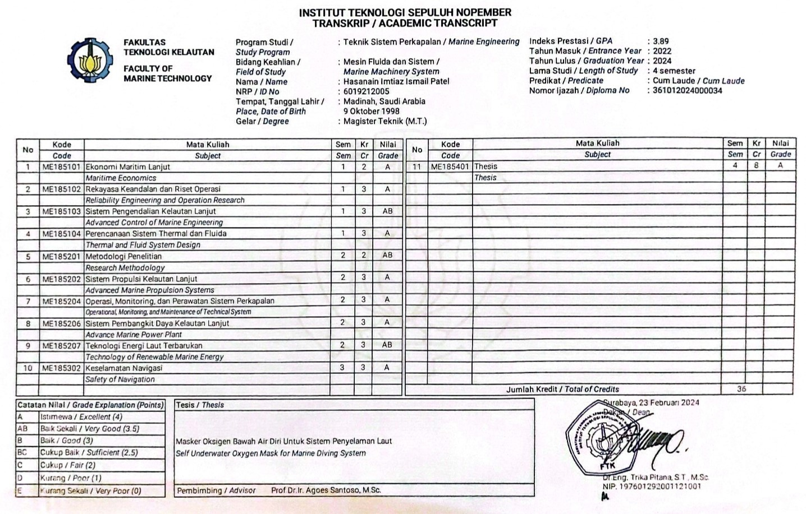

Practical Experience
-
Coding Educator 12/2020 – 12/2024Bright Champs Academy (Online – Work from Home)
- Provided expert programming instruction to students across all educational levels, from elementary to senior high school, encompassing beginner to advanced concepts.
- Implemented stringent quality control measures to ensure superior teaching standards and spearheaded international teacher recruitment to overcome language barriers and enrich the learning experience.
- Directed a committed team focused on achieving long-term educational goals and maintaining consistent availability.
-
Electrical Equipment Trainer - Internship 05/2023 – 08/2023MAN Energy Solutions, Surabaya, Indonesia
- Developed concise, engaging short courses for ship crews using iSpring Suite.
- Produced instructional videos for various operations on onboard electrical and mechanical equipment.
-
Finance Manager 04/2021 – 06/2021KataNenek Kopi, Jakarta, Indonesia
- Developed and executed strategic financial plans, budgets, and projections that directly informed and guided the organization’s critical economic decisions.
- Directed comprehensive budget management, rigorously aligning financial resources with organizational goals and delivering consistent, strategic updates to senior leadership.
- Crafted and delivered precise financial statements - income statements, balance sheets, and cash flow reports - ensuring full compliance with regulatory standards.
- Cost Control: Identified cost-saving opportunities and implemented measures to optimize operational efficiency while maintaining quality and productivity.
- Proactively assessed financial risks and formulated strategies to mitigate them, safeguarding the organization’s long-term economic stability.
-
Marketing Staff 01/2021 – 03/2021PT Aqnil Putra Pratama, Jakarta, Indonesia
- Market Research - Conducted comprehensive market research to uncover trends, customer preferences, and competitive positioning, delivering actionable insights to drive the marketing team’s strategy.
- Event Coordination: Supported the planning and execution of marketing events, trade shows, and product launches, managing logistics and promotional materials to maximize impact.
- Customer Engagement: Engaged with customers through social media and direct outreach, fostering solid relationships and enhancing brand loyalty.
- Performance Analysis: Monitored and analyzed marketing initiative performance, leveraging data to evaluate effectiveness and refine future campaigns for optimal results. Sub Task
- Assisted in underwater welding by preparing essential tools for ship maintenance, creating portable oxygen supplies for divers, and setting up electrical equipment for underwater welding. Maintained regular communication with the ship captain and crew to coordinate maintenance procedures and provide updates.
-
Laboratory Assistant for Mechanical Systems 04/2019 – 04/2020Institut Teknologi Sepuluh Nopember, Surabaya, Indonesia
- Trained in the operation of mechanical equipment with emphasis on safety protocols.
- Provided interactive learning units on system measurements and analysis techniques.
- Conducted training in hazard identification and management specific to maritime environments.
-
Speedboat Designer - Internship 12/2018 – 01/2019PT. PAL Indonesia (Persero), Surabaya, Indonesia
- Designed speedboats using Maxurf software with advanced methods.
- Performed detailed finishing using AutoCAD.
Education
-
Masters in Marine Engineering 02/2021 – 02/2024Institut Teknologi Sepuluh Nopember, Indonesia
Diploma: Master of Engineering (M.Eng.) / Magister Teknik (M.T.) -
Marine Engineering (Double Degree) 08/2016 – 10/2020Hochschule Wismar, Germany
Diploma: Bachelor of Engineering (B.Eng.) / Sarjana Teknik (S.T.)
Awards
- Winner of KNB - Indonesian Government Scholarship for Master’s Degree Programs (2021–2024)
Computer Skills
- Software: MS PowerPoint, MS Word, MS Excel, Performance Analysis, Software Analysis, AutoCAD
- Programming: CFD, Maxurf, Numeca, iSpring, Code.org, Thunkable, Scratch, VideoShow, Visual Studio
Languages
- English - Fluent in spoken and written
- Bahasa Indonesia - Very good knowledge of spoken and written
- Arabic - Good in writing and speaking
- German - Basic knowledge
- Urdu - Mother tongue